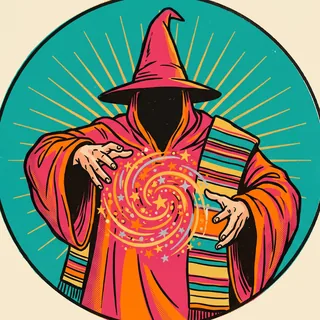
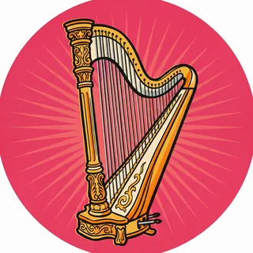
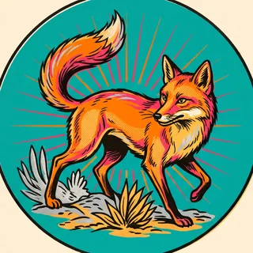
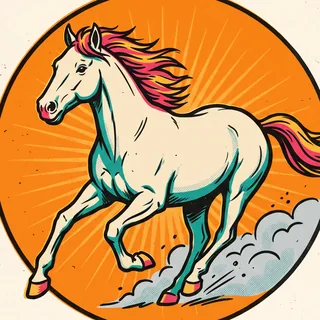
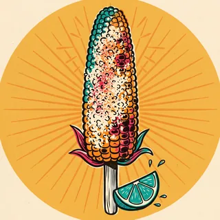

Early season: 3 games played. Percentages and hit rates swing a lot this early; trend charts appear after 10 games.
🎲 How to read this
The eight players getting the most minutes, each with points and their signature stat. Each reference line is the player's last-season average rounded to the half point, so the hit rate shows who is playing above last year's level (new players use this season's average). These are not sportsbook odds, and hit rates are colored as a lean only after 15 games. For fun and analysis, not betting advice.
👽 Wemby Blocks per Game
📊 Prop Hit Rates
| Player | Stat | Reference Line | Season Mean ± 1σ | L5 Games | Season Hit Rate (Over) |
|---|---|---|---|---|---|
 Devin Vassell |
Points | 14.5 last season | 9.3 ± 2.1 | 0/3 (0%) | 0/3 (0.0%) |
 Dylan Harper |
Points | 11.5 last season | 20.0 ± 2.0 | 3/3 (100%) | 3/3 (100.0%) |
| Points | 24.5 last season | 20.0 ± 7.0 | 1/3 (33%) | 1/3 (33.3%) | |
| Blocks | 3.5 last season | 4.0 ± 2.0 | 2/3 (67%) | 2/3 (66.7%) | |
 De'Aaron Fox |
Points | 18.5 last season | 17.3 ± 2.9 | 2/3 (67%) | 2/3 (66.7%) |
| De'Aaron Fox | Assists | 6.5 last season | 8.3 ± 1.2 | 3/3 (100%) | 3/3 (100.0%) |
| Stephon Castle | Points | 16.5 last season | 19.3 ± 4.5 | 2/3 (67%) | 2/3 (66.7%) |
| Stephon Castle | 3-Pointers Made | 1.5 last season | 3.7 ± 1.2 | 3/3 (100%) | 3/3 (100.0%) |
| Julian Champagnie | Points | 11.5 last season | 8.7 ± 3.1 | 1/3 (33%) | 1/3 (33.3%) |
| Julian Champagnie | 3-Pointers Made | 2.5 last season | 2.3 ± 0.6 | 1/3 (33%) | 1/3 (33.3%) |
 Keldon Johnson |
Points | 12.5 last season | 8.3 ± 1.5 | 0/3 (0%) | 0/3 (0.0%) |
 Luke Kornet |
Points | 6.5 last season | 3.7 ± 3.5 | 1/3 (33%) | 1/3 (33.3%) |